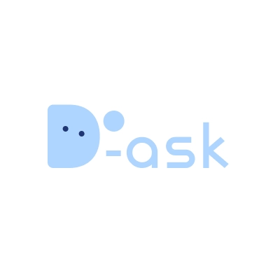
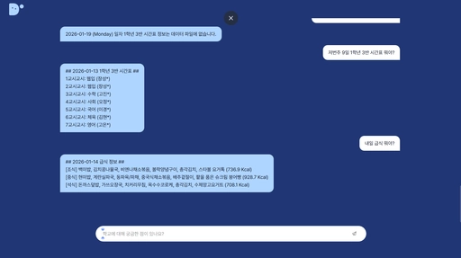
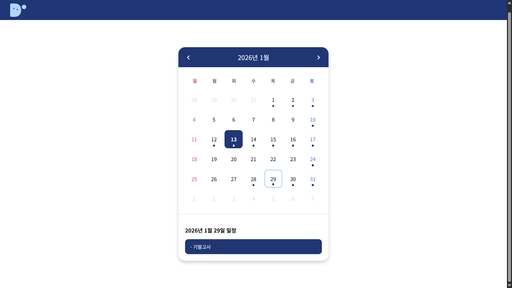
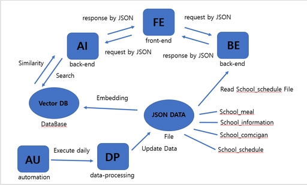
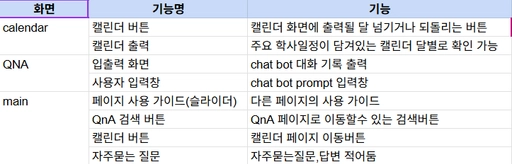

Project 01 · Backend & AI · Team MODEEP
학교 정보를
한 번의 질문으로.
D-ask는 여러 플랫폼에 흩어진 학교 문서를 한곳에 모으고, 문서 기반 질문에 답하는 AI 웹서비스입니다. 저는 다섯 종류의 학교 데이터를 수집하고 AI가 사용할 수 있는 JSON으로 정규화하는 파이프라인을 개발했습니다.
- Scope
- 학교 데이터 수집 · 전처리
- Team
- MODEEP · 4명
- Output
- AI 검색용 JSON 데이터

분산된 문서를
질문 가능한 데이터로
공지사항 · 가정통신문
반복 가능한 수집 흐름
단계적으로 탐색
01 · Product
실제 서비스 화면으로 보는 D-ask
팀이 구현한 서비스 화면입니다. 아래 화면은 제품의 전체 맥락을 보여주며, 이 중 제가 맡은 범위는 화면에 공급되는 학교 데이터의 수집과 정규화입니다.



02 · Problem
정보는 있었지만, 찾기 어려웠습니다.
학사 일정, 급식, 시간표, 공지와 가정통신문이 서로 다른 플랫폼과 문서에 흩어져 있었습니다. 특히 신입생은 정보의 위치부터 알아내야 했고, 선생님과 선배에게 같은 질문이 반복됐습니다.
- 01분산
홈페이지, 내부 공지, PDF 등 여러 위치에 정보가 존재
- 02탐색 비용
원하는 문서가 어디 있는지 먼저 파악해야 하는 구조
- 03반복 질문
학생과 교직원이 같은 정보를 여러 번 설명해야 하는 상황
- 04단일 창구
문서 위치를 몰라도 자연어 질문으로 접근하는 서비스
03 · My contribution
AI가 답하기 전, 데이터를 준비했습니다.
팀 전체 결과와 개인 기여를 구분했습니다. 신유원은 데이터 수집과 전처리를 담당했습니다.
5종 데이터 수집 파이프라인을 개발했다.
학사일정, 시간표, 급식, 공지사항, 가정통신문을 각 출처에 맞는 방식으로 수집했습니다.
Output · 5개 데이터 카테고리출처별 수집 전략을 설계했다.
구조화된 정보는 NEIS Open API와 pycomcigan으로, 웹 문서는 requests와 BeautifulSoup으로 나누어 처리했습니다.
Decision · 데이터 성격에 맞는 도구 선택BFS 기반 링크 탐색을 구현했다.
학교 홈페이지에서 연결된 관련 페이지를 너비 우선으로 탐색해, 한 페이지에서 끝나지 않는 공지 구조를 수집했습니다.
Algorithm · Queue + visited URLAI가 읽을 수 있는 데이터로 정규화했다.
서로 다른 응답 구조를 JSON으로 통일하고, 주 1회 다시 실행할 수 있는 갱신 흐름을 구성했습니다.
Handoff · Search / RAG pipeline04 · Data pipeline세 가지 출처,
세 가지 출처,
하나의 데이터 형식.
학사일정 · 급식
시간표
공지 · 가정통신문
01Collect출처별 수집
→
02 · MY ROLENormalize파싱 · JSON 정규화
→
03Index검색 가능한 문서
→
04AnswerRAG 기반 응답
수집 방식은 달라도 후속 AI 파이프라인은 동일한 형식을 받아야 했습니다. 그래서 출처별 파싱 규칙을 분리하고, 결과는 공통 JSON 구조로 맞추는 데 집중했습니다.
BFS CRAWLER
시작 URL→Queue→페이지 파싱→새 링크 추가
visited에 이미 확인한 URL을 기록하고, 새로 발견한 관련 링크만 Queue에 추가하는 방식으로 탐색 범위를 관리했습니다.
NORMALIZED OUTPUT · CONCEPT
{
"source": "school_notice",
"title": "...",
"content": "...",
"updated_at": "..."
}실제 스키마의 복제가 아닌, 서로 다른 출처를 공통 필드로 맞춘 설계 개념을 보여주는 예시입니다.
05 · System context전체 시스템 속
전체 시스템 속
내가 만든 부분.

TEAM SYSTEMFront-end · AI/RAG · Calendar API서비스 전체의 팀 결과
MY OWNERSHIPSchool sources → Crawling/API → JSON data신유원의 직접 구현 범위
06 · Evidence주장을 문서와
주장을 문서와
화면으로 확인했습니다.
팀 문서에 없는 성능 수치나 사용자 수는 만들지 않았습니다.

신유원의 담당을 데이터 크롤링·전처리로 확인
메인, QnA, 캘린더의 실제 구현 화면 사용
JSON 데이터가 백엔드와 AI에 연결되는 구조 확인
07 · Reflection코드 밖의 정렬도
코드 밖의 정렬도
시스템의 일부였습니다.
서로 다른 데이터를 다루는 법
requests, BeautifulSoup, pycomcigan을 실제 데이터에 적용하며 각기 다른 구조를 AI가 사용할 수 있는 형태로 가공했습니다.
같은 요구사항을 다르게 이해한 순간
팀원 간 용어와 범위가 어긋나면 구현 방향도 달라진다는 것을 경험했습니다. 역할 합의와 진행 상황 공유가 프로젝트 품질에 직접 영향을 준다는 점을 배웠습니다.
수집 품질을 측정 가능한 시스템으로
- 크롤링 실패와 문서 변경 감지
- 중복 문서 제거와 버전 관리
- 질문 세트 기반 retrieval 평가
- 근거 일치 여부와 답변 품질 평가
D-ask · 2026문서를 모으는 일에서